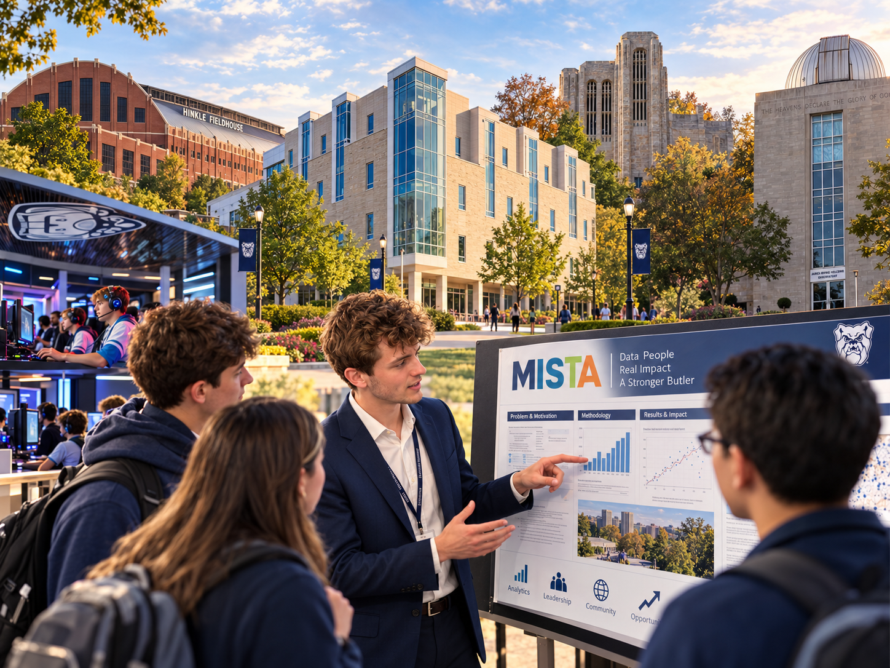

01
Build capability.
Workshops, learning pathways, certifications, badges, competitions, and applied projects help members develop visible skills.
Butler University · Lacy School of Business
Management Information Systems. Technology. Analytics. Better Decisions.
We are Butler's student community for people who want to use data, technology, AI, operations research, and analytics to make better decisions and create meaningful impact.

Our chapter
MISTA combines the local identity and community of Butler's MIS and Analytics faculty with our professional community, The Institute for Operations Research and the Management Sciences (INFORMS). The chapter welcomes undergraduate and masters-level students interested in analytics, AI, information systems, data science, mathematics, statistics, supply chain, and related fields.
Our goal is practical: help students build skills, create visible professional outcomes, connect with alumni and employers, and use analytics in service of real organizations and communities.
Workshops, learning pathways, certifications, badges, competitions, and applied projects help members develop visible skills.
Meet students, alumni, faculty, and practitioners who care about analytics, technology, operations research, and decision making.
Turn skills into projects, research, presentations, community engagement, internships, and better decisions.
Hands-on technical sessions, practitioner conversations, and professional development.
Participate in the MISTA Challenge, Data4Good, and other analytics competitions.
Apply analytics and technology to projects that create value beyond the classroom.
Explore DataCamp, Microsoft, AWS, CAP-E, Excel, SAS, Databricks, and other pathways.
Build posters, presentations, code, and research artifacts with faculty mentors.
Connect your work to INFORMS and other professional communities through events and presentations.
New in 2026–27
The MISTA Challenge turns courses, badges, certifications, projects, posters, pitches, and professional development into a semester-long points competition. Students who reach the fall participation milestone earn a custom Butler badge they can share on LinkedIn.
Visit the MISTA Challenge →Membership
Members can connect club activities to professional credentials, portfolio development, competitions, research, and career preparation.
2026 event spotlight
Real careers. Real advice. A brighter future.
Four Butler alumni returned to share candid advice about careers, professional growth, analytics, technology, and decision making with current students.

Open to Butler students from any major who want to build with data, technology, and analytics.